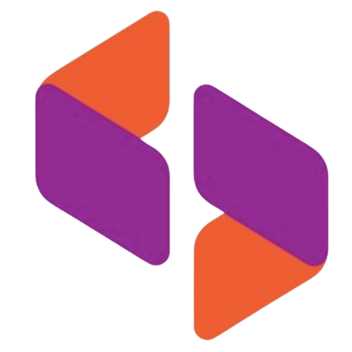

Engenharia de Software Full Stack
FILIPE
MARTINS
Transformo ideias em produtos digitais reais com JavaScript e um ecossistema moderno de ferramentas.
Desenvolvo aplicações web do front-end ao back-end, unindo código limpo e boas práticas para entregar produtos que funcionam de verdade — do primeiro protótipo à produção.

Apaixonado por tecnologia e por transformar boas ideias em produtos que funcionam de verdade.
Vejo cada projeto como um problema a ser resolvido: entendo o contexto, escolho as ferramentas certas e construo soluções digitais pensando tanto na experiência de quem usa quanto na manutenção de quem programa.
Filipe Martins
Desenvolvedor Full Stack
Projetos Selecionados
BirB
Projeto pessoal de automação de atendimento via WhatsApp com IA — qualifica leads, responde 24h por dia e agenda atendimentos automaticamente, com dashboard completo de acompanhamento.
Em DesenvolvimentoMisticrochet
Loja online de artesanato autoral em crochê — amigurumis, acessórios e vestimentas exclusivas, com vitrine de produtos e pedidos sob encomenda.
Visitar SitePortolinea
Site institucional para empresa de pintura residencial e industrial, com apresentação de serviços, diferenciais e formulário de orçamento.
Visitar SiteFastwork Financeiro
Módulo financeiro corporativo com dashboard de faturamento, contas a pagar/receber e conciliação automática de extratos bancários (Protheus x PDF), com comparação de lançamentos por banco e período.
Sistema Interno